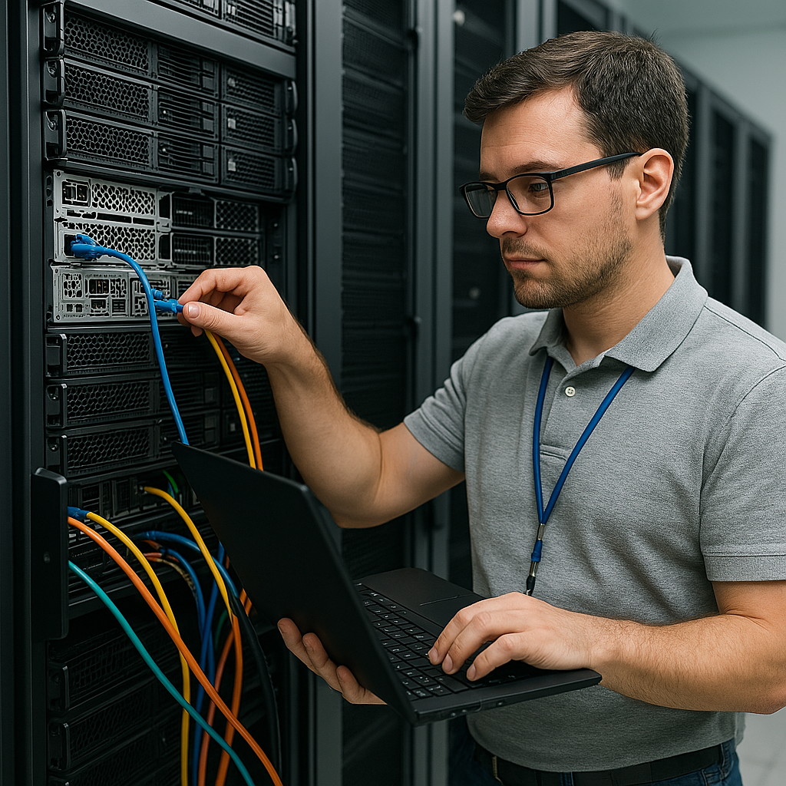

Filière : Installation Maintenance Informatique
Cette formation permet d’acquérir les compétences nécessaires à la mise en service, la maintenance et le dépannage des équipements informatiques.
Objectifs
- Former des techniciens capables d’installer, configurer et maintenir les équipements informatiques (ordinateurs, réseaux, périphériques).
- Diagnostiquer et réparer les pannes matérielles et logicielles sur des équipements informatiques.
- Installer et configurer des réseaux locaux (LAN) et leurs équipements associés (routeurs, switches, points d’accès).
- Mettre en place des solutions de sécurité informatique pour protéger les données etles systèmes.
- Assurer le bon fonctionnement des systèmes informatiques en réalisant des opérations de maintenance préventive et corrective.
Débouchés
- Technicien de maintenance (matériel et/ou logiciel)
- Support utilisateur
- Installateur de réseaux informatiques
- Agent de maintenance informatique en entreprise ou administration
- Technicien systèmes et réseaux (dans les PME)
- Gestionnaire de parc informatique
- Intervenant en cybersécurité de base (selon les compétences acquises)